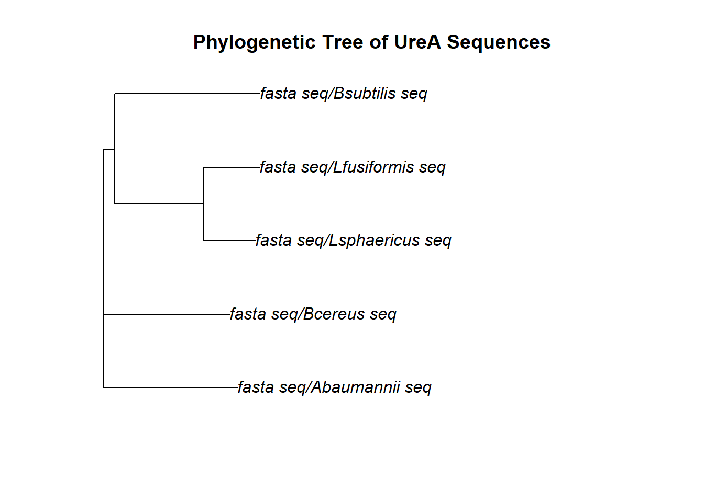

#install.packages("ape")
#if (!require("BiocManager", quietly = TRUE))
#install.packages("BiocManager")
#BiocManager::install("treeio")
#if (!require("BiocManager", quietly = TRUE))
#install.packages("BiocManager")
#BiocManager::install("ggtree")
#if (!require("BiocManager", quietly = TRUE))
#install.packages("BiocManager")
#BiocManager::install("SGSeq")
#BiocManager::install("msa")
#install.packages("EnvNJ")
#install.packages('tinytex')
#tinytex::install_tinytex()Bact phylo tree
The goal of this is to make a tree based on 5 strains of bacteria and the urease A gene.
library(rbioinfcookbook)
library(SGSeq)Loading required package: IRangesLoading required package: BiocGenerics
Attaching package: 'BiocGenerics'The following objects are masked from 'package:stats':
IQR, mad, sd, var, xtabsThe following objects are masked from 'package:base':
anyDuplicated, aperm, append, as.data.frame, basename, cbind,
colnames, dirname, do.call, duplicated, eval, evalq, Filter, Find,
get, grep, grepl, intersect, is.unsorted, lapply, Map, mapply,
match, mget, order, paste, pmax, pmax.int, pmin, pmin.int,
Position, rank, rbind, Reduce, rownames, sapply, saveRDS, setdiff,
table, tapply, union, unique, unsplit, which.max, which.minLoading required package: S4VectorsLoading required package: stats4
Attaching package: 'S4Vectors'The following object is masked from 'package:utils':
findMatchesThe following objects are masked from 'package:base':
expand.grid, I, unname
Attaching package: 'IRanges'The following object is masked from 'package:grDevices':
windowsLoading required package: GenomicRangesLoading required package: GenomeInfoDbLoading required package: RsamtoolsLoading required package: BiostringsLoading required package: XVector
Attaching package: 'Biostrings'The following object is masked from 'package:base':
strsplitLoading required package: SummarizedExperimentLoading required package: MatrixGenericsLoading required package: matrixStatsWarning: package 'matrixStats' was built under R version 4.4.3
Attaching package: 'MatrixGenerics'The following objects are masked from 'package:matrixStats':
colAlls, colAnyNAs, colAnys, colAvgsPerRowSet, colCollapse,
colCounts, colCummaxs, colCummins, colCumprods, colCumsums,
colDiffs, colIQRDiffs, colIQRs, colLogSumExps, colMadDiffs,
colMads, colMaxs, colMeans2, colMedians, colMins, colOrderStats,
colProds, colQuantiles, colRanges, colRanks, colSdDiffs, colSds,
colSums2, colTabulates, colVarDiffs, colVars, colWeightedMads,
colWeightedMeans, colWeightedMedians, colWeightedSds,
colWeightedVars, rowAlls, rowAnyNAs, rowAnys, rowAvgsPerColSet,
rowCollapse, rowCounts, rowCummaxs, rowCummins, rowCumprods,
rowCumsums, rowDiffs, rowIQRDiffs, rowIQRs, rowLogSumExps,
rowMadDiffs, rowMads, rowMaxs, rowMeans2, rowMedians, rowMins,
rowOrderStats, rowProds, rowQuantiles, rowRanges, rowRanks,
rowSdDiffs, rowSds, rowSums2, rowTabulates, rowVarDiffs, rowVars,
rowWeightedMads, rowWeightedMeans, rowWeightedMedians,
rowWeightedSds, rowWeightedVarsLoading required package: BiobaseWelcome to Bioconductor
Vignettes contain introductory material; view with
'browseVignettes()'. To cite Bioconductor, see
'citation("Biobase")', and for packages 'citation("pkgname")'.
Attaching package: 'Biobase'The following object is masked from 'package:MatrixGenerics':
rowMediansThe following objects are masked from 'package:matrixStats':
anyMissing, rowMedianslibrary(ape)Warning: package 'ape' was built under R version 4.4.3
Attaching package: 'ape'The following object is masked from 'package:Biostrings':
complementlibrary(treeio)treeio v1.30.0 Learn more at https://yulab-smu.top/contribution-tree-data/
Please cite:
LG Wang, TTY Lam, S Xu, Z Dai, L Zhou, T Feng, P Guo, CW Dunn, BR
Jones, T Bradley, H Zhu, Y Guan, Y Jiang, G Yu. treeio: an R package
for phylogenetic tree input and output with richly annotated and
associated data. Molecular Biology and Evolution. 2020, 37(2):599-603.
doi: 10.1093/molbev/msz240
Attaching package: 'treeio'The following object is masked from 'package:Biostrings':
masklibrary(ggplot2)
Attaching package: 'ggplot2'The following object is masked from 'package:SGSeq':
annotatelibrary(ggtree)ggtree v3.14.0 Learn more at https://yulab-smu.top/contribution-tree-data/
Please cite:
Guangchuang Yu, Tommy Tsan-Yuk Lam, Huachen Zhu, Yi Guan. Two methods
for mapping and visualizing associated data on phylogeny using ggtree.
Molecular Biology and Evolution. 2018, 35(12):3041-3043.
doi:10.1093/molbev/msy194
Attaching package: 'ggtree'The following object is masked from 'package:ape':
rotateThe following object is masked from 'package:Biostrings':
collapseThe following object is masked from 'package:IRanges':
collapseThe following object is masked from 'package:S4Vectors':
expandlibrary(msa)
library(EnvNJ)Warning: package 'EnvNJ' was built under R version 4.4.3library(tinytex)Warning: package 'tinytex' was built under R version 4.4.3fastaconc(otus = c('fasta_seq/Bsubtilis_seq', 'fasta_seq/Bcereus_seq', 'fasta_seq/Lsphaericus_seq', 'fasta_seq/Abaumannii_seq', 'fasta_seq/Lfusiformis_seq'))[1] "Work finished. Fasta file saved at ./concatenated_multispecies.fasta"Used the fastaconc() function to combine all the separate fasta files into one file.
seq_file <- 'concatenated_multispecies.fasta'
seqs <- readAAStringSet(seq_file)
seqsAAStringSet object of length 5:
width seq names
[1] 318 ATGAAACTGACACCAGTTGAACA...TTTCTGCGGAGGTGAAGTCATGA fasta_seq/Bsubtil...
[2] 219 AAGTTAAACTATCCAGAAAGTAT...CTATTCATCAGCCAATTCATTAA fasta_seq/Bcereus...
[3] 303 TTGAAGCTATCACCAGTAGAACA...CAGTTCACCGTCCAATTCAGTAA fasta_seq/Lsphaer...
[4] 303 ATGGAACTCAATCCAACAGAAAA...CTGTTCATCAGCCCATTGTATAA fasta_seq/Abauman...
[5] 303 TTGAAGCTATCACCAGTAGAACA...CAGTCCACCGTCCAATTCAGTAA fasta_seq/Lfusifo...Read in the sequences into strings for R.
Might need this later on desktop so leaving it in for now. I am having issues with the latex text to pdf function in msaprettyprint but setting the tinytex path seams to fix it.
# Get the TinyTeX binary directory
tt_path <- tinytex::tinytex_root()
# Build the correct path to the LaTeX binaries
bin_dir <- list.dirs(file.path(tt_path, "bin"), recursive = FALSE)[1]
# Prepend that path to your R session's PATH
Sys.setenv(PATH = paste(bin_dir, Sys.getenv("PATH"), sep = .Platform$path.sep))
# Test again
#system("pdflatex --version")
#writeLines(c(
# "\\documentclass{article}",
# "\\begin{document}",
# "Test!",
# "\\end{document}"
#), "test.tex")
#tinytex::pdflatex("test.tex")alignment <- msa(seqs, method = "ClustalOmega")using GonnetmsaPrettyPrint(alignment, output ="pdf", showNames = "left", showLogo = "none", verbose = TRUE, file = "whole_align.pdf", askForOverwrite=FALSE)Multiple alignment written to temporary file C:\Users\Kris\AppData\Local\Temp\Rtmpymtgh0\seq3c4c61df2902.fastaFile whole_align.tex createdOutput file whole_align.pdf createdGenerates a PDF file with the sequence alignments. For some reason this breaks when verbose is false so the output is messy but necessary.
alignment_seqinr <- msaConvert(alignment, type = "seqinr::alignment")
distances <- seqinr::dist.alignment(alignment_seqinr, "identity")
tree <- ape::nj(distances)
plot(tree, main = "Phylogenetic Tree of UreA Sequences")
This generates a tree based on the alignments generated previously. This tree does make sense. Both Lysinibacillus species were paired and the Bacillus species were not far apart. This comparison is only for ureA which only a part of the urease protein. It does however provide some information about the relation between urease proteins these five strains. In terms of R work this project provided experience with the msa package and working with fasta files.